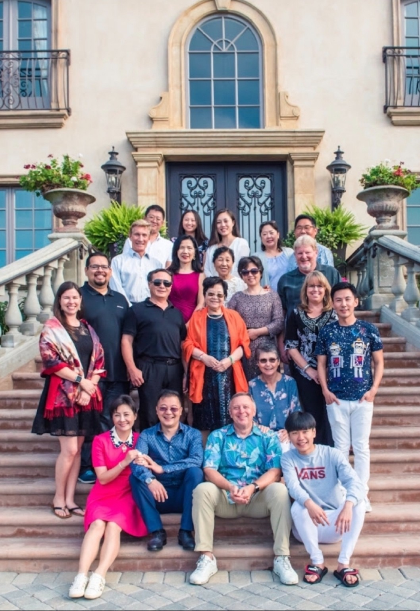
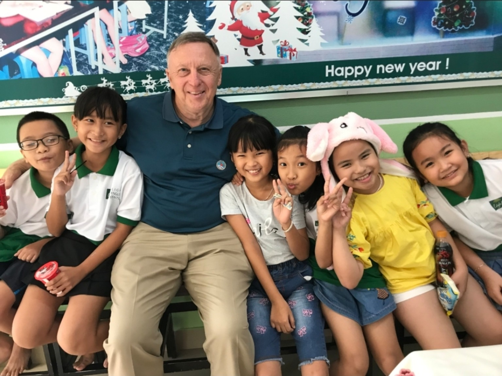
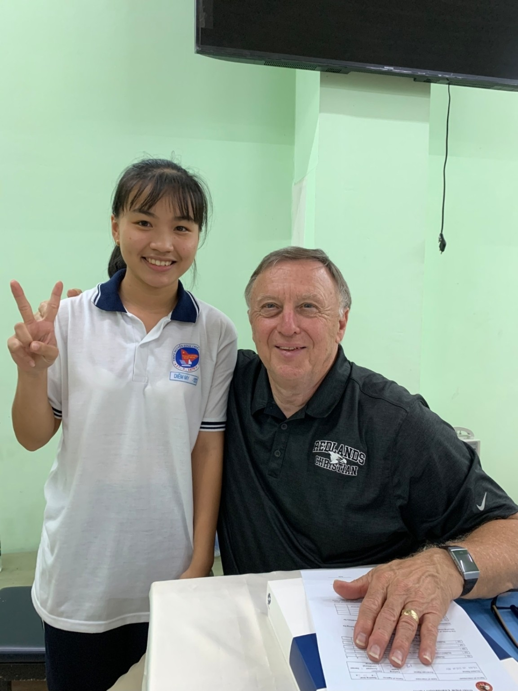
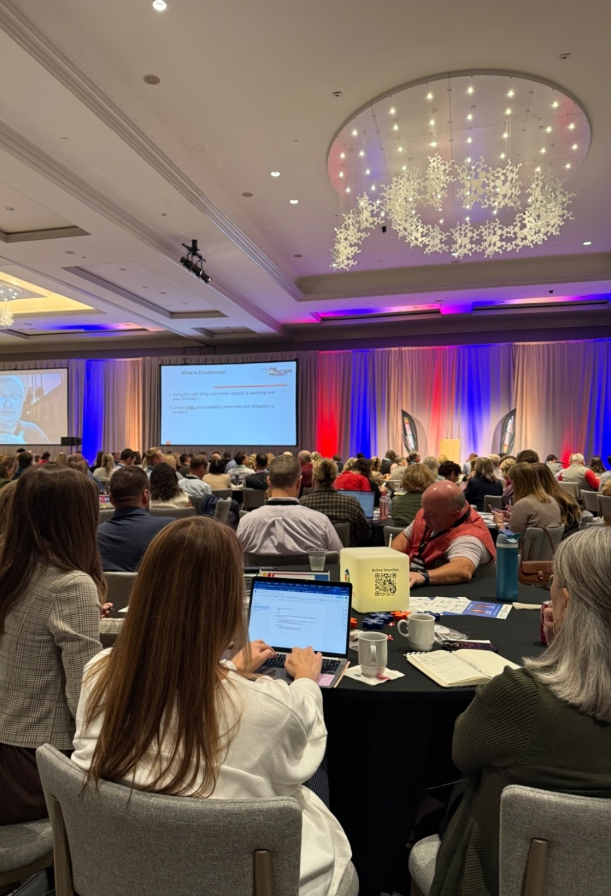
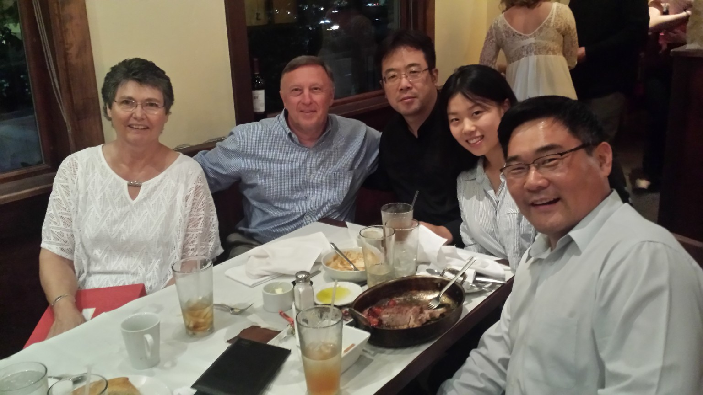

이사회 개발과 거버넌스
이사회와 기관장 사이의 건강한 관계를 세우고, 사명을 명확히 하며, 운영의 기준이 되는 정책을 강화합니다.
- 이사회 워크숍 및 역할 정립
- 정책 개발과 실행
- 학교장 평가 절차
기독교 교육과 조직 리더십
미국과 세계 곳곳의 기독교 학교, 교회, 선교 기관을 이끄는 분들을 위한 깊이 있는 자문.
컨설팅 분야 살펴보기 ↗
기독교 초·중·고등학교 ✦ 교회 ✦ 기독교 선교·사역 기관
01 / 우리의 사명
탁월함은 분명한 소명 의식과 그 소명을 실천하는 리더십에서 시작됩니다.
Dan Cole Consulting은 모든 사역과 운영에서 탁월함을 추구하는 기독교 기관에 자문을 제공합니다. 이사회, 기관장, 실무진이 맡겨진 사명을 이루도록 함께합니다.
문화가 변화하고 복잡한 결정을 마주하는 시대, 리더들이 기독교적 신념과 실천적 지혜, 분명한 방향성을 가지고 과제에 대응하도록 돕습니다.
02 / 컨설팅 분야
기관의 미래를 결정하는 중요한 선택에 전문적인 자문을 제공합니다.
이사회와 기관장 사이의 건강한 관계를 세우고, 사명을 명확히 하며, 운영의 기준이 되는 정책을 강화합니다.
공유된 비전을 가까운 미래와 그 이후를 위한 실질적인 방향으로 구체화합니다.
기관의 안정과 장기적인 지속 가능성을 뒷받침하는 재정 전략과 정책을 개발합니다.
학교만의 차별성을 명확히 전달하고 학생 모집을 뒷받침하는 마케팅 전략을 개발합니다.
기존 모금 활동을 강화하고 기관의 사명을 발전시키는 새로운 전략을 마련합니다.
학교장이 교직원의 성장을 지원하고 효과적인 학생 지도 방안을 마련하도록 돕습니다.
국경을 넘어 이어지는 사명
Dan Cole Consulting은 미국뿐 아니라 한국, 중국, 일본 등 다양한 나라의 다수 기독교 학교를 돕고 있습니다. 리더들이 학교의 기반을 강화하고 기독교 교육의 사명을 실현하도록 지원합니다.



03 / 대표의 비전
DAN COLE CONSULTING저는 학교와 교회, 선교 기관이 지혜로운 리더십 아래 분명한 사명으로 하나 되고, 신실한 청지기 정신으로 더욱 단단해지기를 소망합니다. 그 리더들 곁에서 귀 기울여 듣고, 복잡한 결정 앞에 방향을 제시하며, 신념이 목적 있는 실천으로 이어지도록 돕는 것이 저의 사명입니다.
리더를 세우는 일은 그들이 섬기는 학생과 가정, 공동체를 세우는 일입니다. 그리스도께 신실하면서도 다음 세대가 이끌고 섬길 수 있도록 준비시키는 기관, 그것이 제가 함께 만들어 가고 싶은 오래도록 이어지는 영향력입니다.

진심으로 함께하는 자문
모든 기관 뒤에는 의미 있는 책임을 감당하는 사람들이 있습니다. 우리는 그들의 사명과 과제, 그리고 그들이 섬기는 공동체에 주목하며 지원합니다.
이사회에서 교실에 이르기까지 목표는 같습니다. 기독교 기관이 신실하게 이끌고, 더 잘 섬기도록 돕는 것입니다.
우리의 사명 다시 보기 ↗신실한 리더십. 오래도록 이어지는 영향력.
여러분의 학교와 기관, 그리고 앞으로의 과제에 대해 이야기 나눠 보세요.
이메일로 문의하기 ↗djcloe3@gmail.com